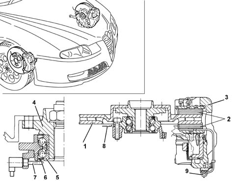

3310A FRONT DISC BRAKES
- Path
- Descriptions > 33 BRAKING SYSTEM > 3310 DISC BRAKES > 3310A FRONT DISC BRAKES
- Kind
- system description
- Applies to
- all engines; all production periods
- Interactive page
- https://sloeber94.github.io/elrnDB-aGt/en/#/125000345
Applies to: all engines; all production periods
CONSTRUCTION FEATURES
The car is fitted with ventilated discs and Theves floating cast iron calipers with automatic play take-up
A multipolar magnetic ring fitted to the inner hub bearing race indicates wheel movement to the active ABS sensor [
Characteristic of working principle 3340 ANTI-LOCK BRAKE SYSTEM (ABS)
]

1 - Brake disc
2 - Brake pads
3 - Brake caliper
4 - Hub
5 - Hub bearing
6 - Magnetic ring
7 - Active ABS sensor
8 - Guard
9 - Pad wear warning light connection